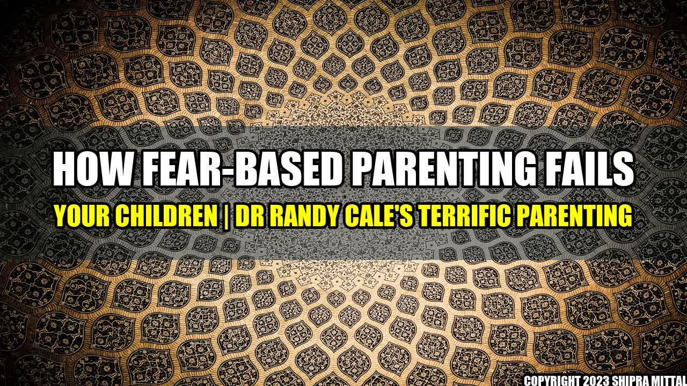

How Fear-Based Parenting Fails Your Children

When I was a child, my mother used to threaten me with punishment if I didn't get good grades. She would say things like "if you don't get an A, you won't be able to go to college and get a good job." I was terrified of failing, and it only made me more anxious and stressed. This is an example of fear-based parenting.
Fear-based parenting is when parents use fear and punishment to motivate their children to behave in a certain way. It's the idea that children need to be scared into behaving correctly, or they will turn out badly. However, this kind of parenting has been proven to be ineffective and harmful to children.
Quantifiable Examples
- Children who are raised with fear-based parenting tend to struggle with anxiety and depression later in life.
- They also have a harder time forming healthy relationships because they are often scared to trust others.
- Studies have shown that children who are punished for mistakes feel more shame and guilt, which can lead to a lack of confidence and self-esteem.
Why Fear-Based Parenting Fails
There are a few reasons why fear-based parenting fails:
- It doesn't promote learning: When children are constantly scared and anxious, they are not in the right mindset to learn. They are focused on avoiding punishment rather than understanding the material.
- It damages the parent-child relationship: Fear-based parenting can create a power dynamic where the parent is seen as the authority figure, rather than a partner. This can cause resentment and a lack of trust.
- It teaches children to be fearful of mistakes: Children who are raised with fear-based parenting are often scared to try new things or take risks, as they are afraid of making mistakes. This can limit their ability to learn and grow.
Practical Tips for Positive Parenting
So how can you avoid fear-based parenting and promote positive parenting instead? Here are some practical tips:
- Focus on positive reinforcement: Instead of punishing your child for mistakes, focus on praising them for good behavior. This will create a more positive atmosphere and encourage your child to want to behave correctly.
- Encourage open communication: Make it clear to your child that they can talk to you about anything, without fear of punishment. This will create a more trusting relationship and help your child feel more comfortable coming to you with their problems.
- Model healthy behavior: Children learn by example, so make sure you are modeling the behavior you want to see in your child. This includes being kind, respectful, and forgiving.
Conclusion
- Fear-based parenting can be harmful to your child's mental and emotional health.
- Positive parenting is a more effective way to encourage good behavior and promote a healthy relationship with your child.
- By focusing on positive reinforcement, open communication, and modeling healthy behavior, you can create a more supportive and nurturing environment for your child to grow and thrive.
References
Hashtags
- #parentingtips
- #positiveparenting
- #terrificparenting
- #childdevelopment
Article Category
Parenting and Child Development
Curated by Team Akash.Mittal.Blog
Share on Twitter Share on LinkedIn